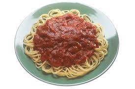

Pasta

Pasta
You know what this is! Noodles and sauce. Thats it! Yum!
Indgredients
- Canned tomatoes
- Garlic
- Olive Oil
- Dried oregano
- Salt
- Onion & chili flakes (optional)
Steps
- In a medium pot, heat olive oil over medium heat.
- Add garlic, onion and a pinch of chili flakes if you use it. Saute' gently until golden, about 4-5 minutes.
- Stir in tomatoes, oregano and a good pinch of salt. Reduce heat to low and cook for 15 minutes.
- Stir occasionally. If using plum tomatoes, crush them with the back of a wooden spoon while stirring the sauce.
Meanwhile, cook your pasta in boiling salted water until al dente.
Taste the marinara sauce, adjust the seasoning with more salt or pepper if you like.
Drain your pasta (saving about 1/2 cup of pasta water), stir into the marinara sauce, turn the heat to high and toss well to coat for about 10 seconds letting the pasta absorb the flavor from the sauce. At this stage, you might want to add some of the reserve pasta water to thin out the sauce, just as much as needed.
- Serve with a drizzle of olive oil or extra virgin olive oil, some oregano and chili flakes for a little kirk. Enjoy!